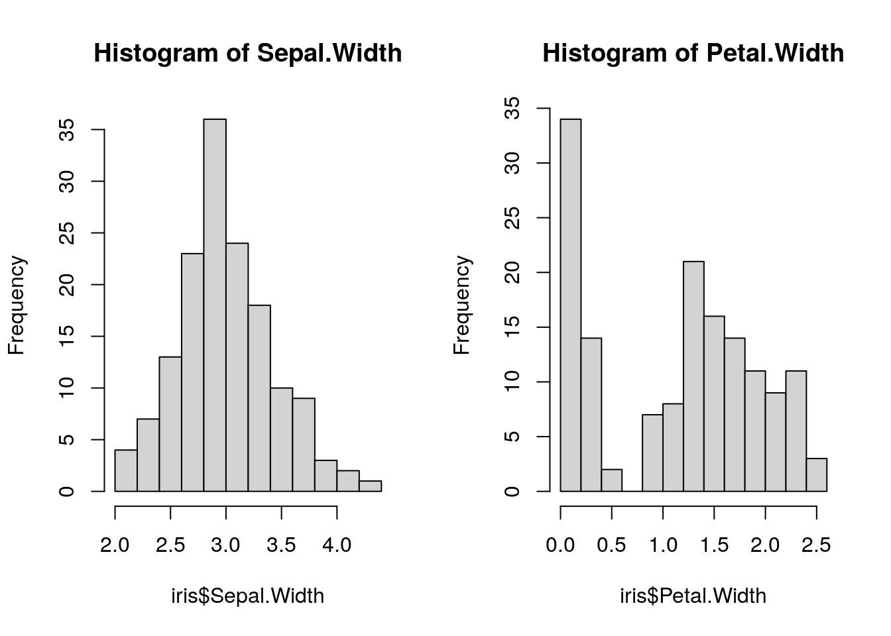
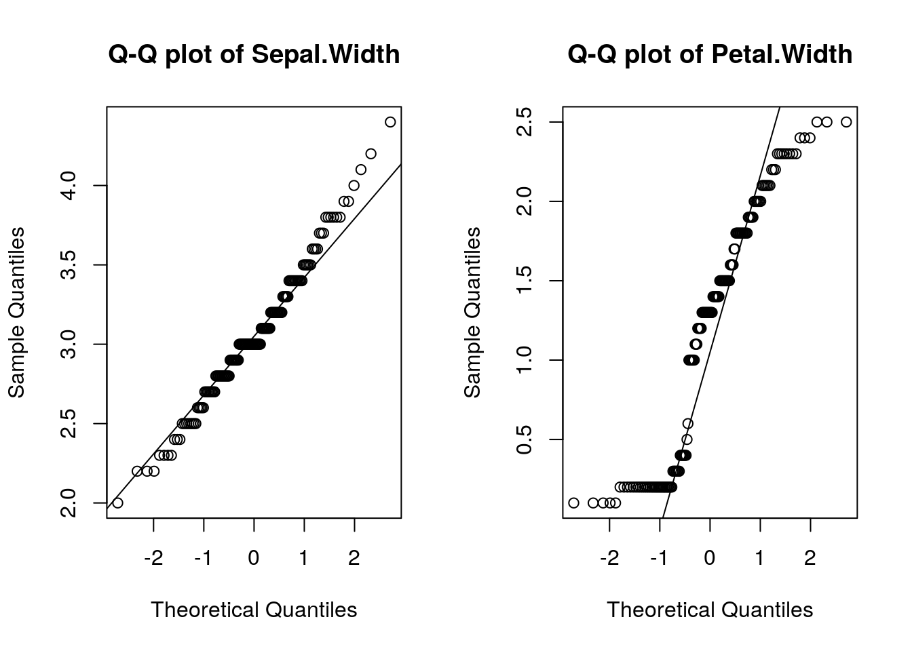

Chapter 3 Basic Statistics
3.0.1 Outline
依據你的資料型態來選擇統計方法，大致上可以用比較方式，原資料是否符合常態分佈與要檢定的統計量來挑選統計方法。
比較方式關乎到你的實驗設計，大致上可分為 :- 比較一個樣本與目標。 i.g. 這個骰子是均勻隨機的還是灌鉛的。
-
兩組樣本相互比較，其中亦可分為 :
- 兩組獨立樣本。 i.g. 比較吃安慰劑與藥劑的兩群小鼠之基因表現。
- 兩組成對樣本。 i.g. 比較同一批小鼠吃藥前後的基因表現。
- 比較兩組以上的樣本。 i.g. 比較不同國家國民的BMI。
統計分法大致上可分為參數(parametric)分析及無母數(non-parametric)分析兩大類。 參數分析需要顧及資料是否為常態分布、是否有相同變異數、是否有離群值(outlier)等許多前提假設。無母數分析則無需顧及前提假設。故需要檢查資料是否符合常態分佈，以下提供幾種方法。 於是我們拿Anderson’s Iris data set中的花萼寬及花瓣寬來測試。
par(mfrow = c(1,2))
hist(iris$Sepal.Width, main = "Histogram of Sepal.Width")
hist(iris$Petal.Width, main = "Histogram of Petal.Width") 從直方圖可以看出Sepal.Width的分佈比Petal.Width更符合常態分佈。
par(mfrow = c(1,2))
qqnorm(iris$Sepal.Width, main = "Q-Q plot of Sepal.Width")
qqline(iris$Sepal.Width)
qqnorm(iris$Petal.Width, main = "Q-Q plot of Petal.Width")
qqline(iris$Petal.Width) 且 可以看出Sepal.Width的分佈比Petal.Width更符合常態分佈。